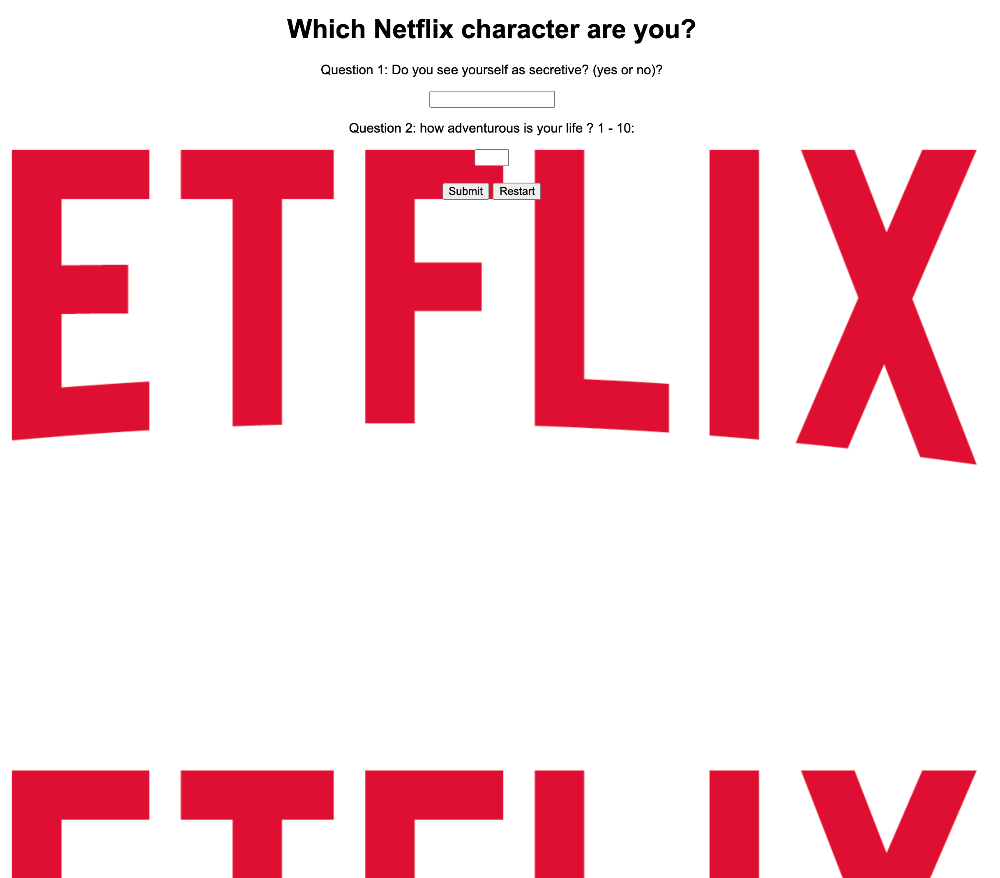
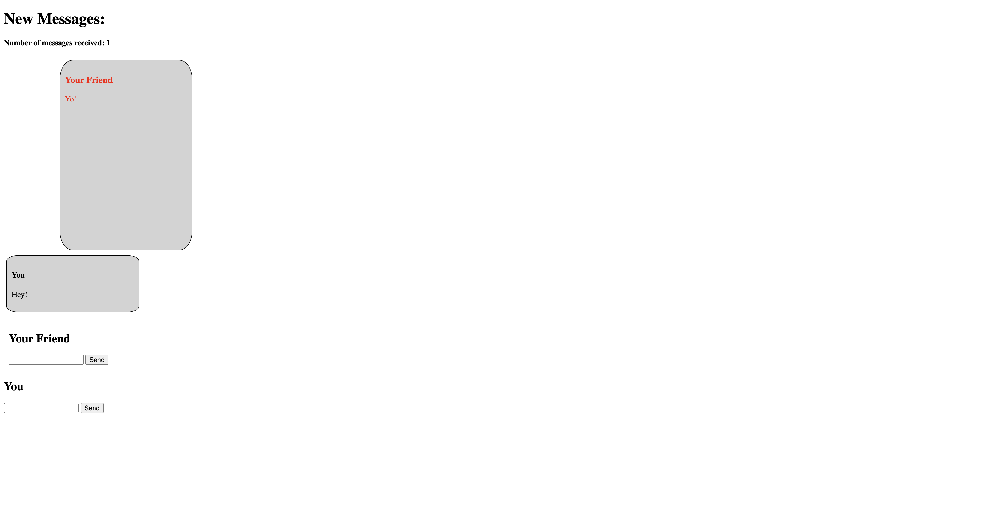

Character Quiz
You answered questions and it will give you the character that most relates to your answers.
This project tested our understanding of using if/else condtionals in javascript and
I feel I was able to learn a lot through the project making process.
A big challenge for me throughout this project was making sure that my if/else statements worked.
I took a lot of debugging but I eventually figured it out.
Jquery Game

This project was the first time I was seeing these new actions and learning them was an important part to doing this project.
My biggest challenge I faced was definitely the restart button.
With the click of the button we we're supposed to be brought back to the beginning of the game and I could not figure out why what I was doing was wrong.
I made it so that it would hide everything not needed for the first page and showed everything it did need, but it wouldn't work so I made it
so when you click the button it links you back to the first page.
Chatbot
The most important thing I learned while making the chatbot was the append feature.
Append was also the thing I struggled with the most, but after trying to understand it better with the help from my teacher I was able to complete the chatbot.
Basketball Counter

I learned how to make a counter with jquery.
I had prior knowledge of how to make a counter in python and used that knowledge to overcome the challenge of making my counter work.
College Packing List

I learned how to use the click function better.
This was something I previously worked on but still struggled. So having this extra practice was really good for me.